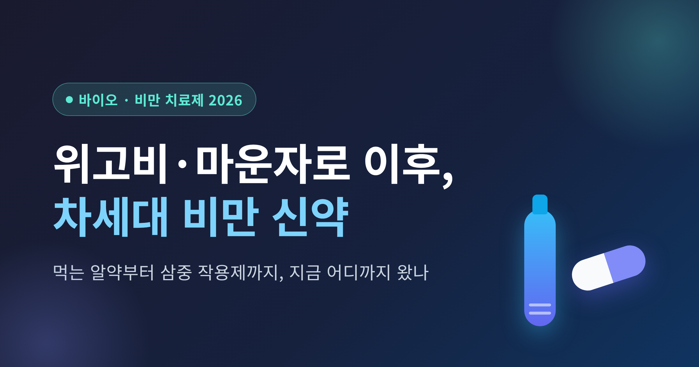
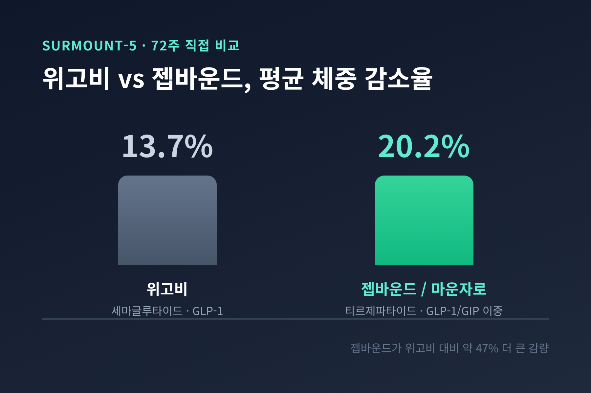
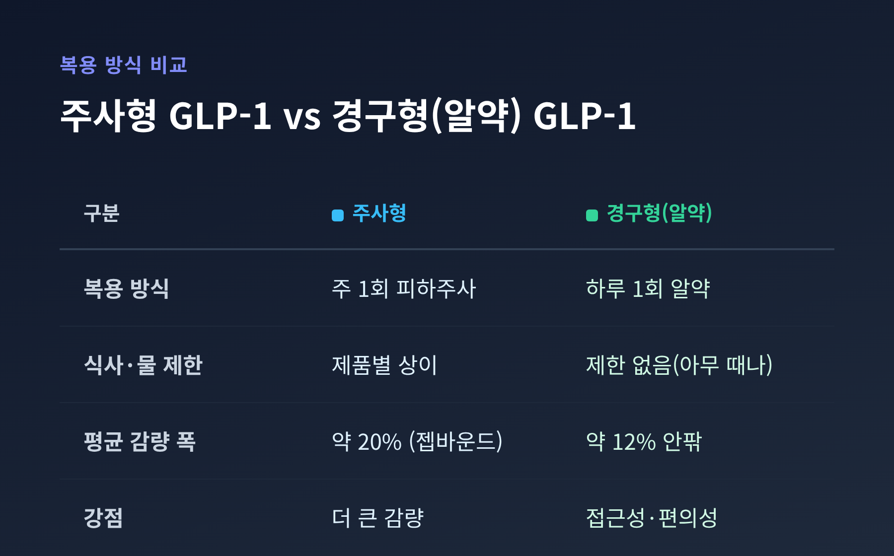
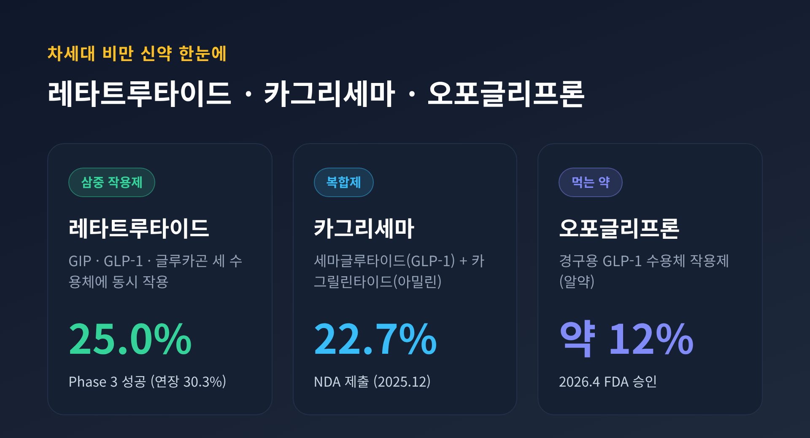
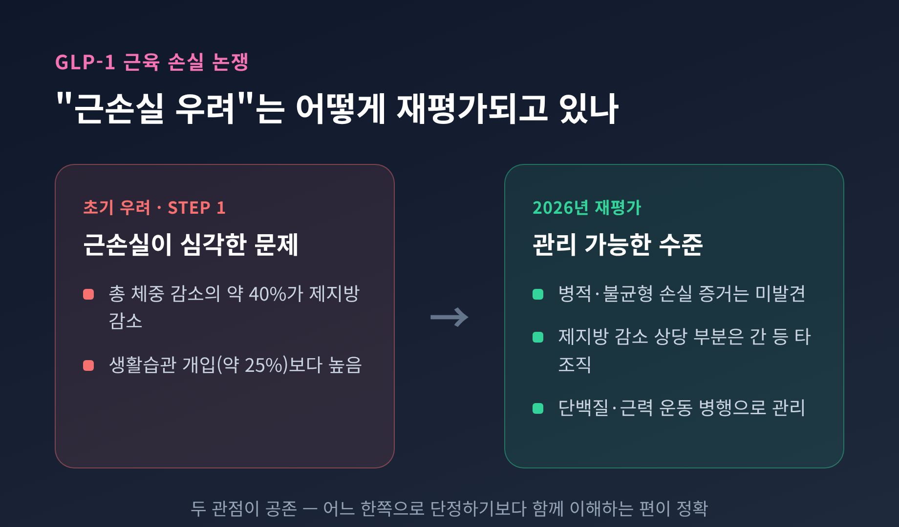

[바이오] 비만 치료제 2026 — 위고비·마운자로 이후 차세대 비만 신약 어디까지 왔나

이번 글에서는 2026년 현재 비만 치료제가 어디까지 왔는지를 정리해 보겠습니다.
먼저 결론부터 짧게 요약합니다.
- 직접 비교 임상에서 마운자로 계열(티르제파타이드)이 위고비보다 큰 체중 감량을 보였습니다.
- 2026년 들어 '먹는 비만약'과 '삼중 작용제'라는 두 갈래의 차세대 신약이 본격화됐습니다.
- 한국에서도 마운자로가 빠르게 자리 잡았고, 국내 기업의 신약도 출시를 앞두고 있습니다.
한 가지 먼저 말씀드릴 것이 있습니다. 이 글은 일반적인 건강·정보 제공을 목적으로 한 정리이며, 전문적인 진단·처방·진료를 대체하지 않습니다. 비만 치료제의 복용 여부와 용량, 부작용 대응은 약효와 부작용의 개인차가 크므로 반드시 의사 등 전문가와 상담하시길 권합니다. 이 글은 특정 약의 복용을 권하는 글이 아니라는 점을 미리 밝혀 둡니다.
위고비 vs 마운자로 — 직접 붙여 본 결과
비만 치료제 이야기의 출발점은 GLP-1입니다.
위고비(성분명 세마글루타이드)는 주 1회 주사하는 GLP-1 수용체 작용제입니다. 식욕을 억제하고 포만감을 늘려 체중을 줄입니다. 당뇨용으로는 오젬픽이라는 이름으로도 쓰입니다.
마운자로·젭바운드(성분명 티르제파타이드)는 한발 더 나아갔습니다. GLP-1과 GIP라는 두 수용체에 동시에 작용하는 '이중 작용제'입니다. 두 경로를 함께 자극해 더 큰 감량을 노립니다.
두 약을 직접 맞붙인 임상이 SURMOUNT-5(72주)입니다.
| 약물 | 계열 | 평균 체중 감소(72주) |
|---|---|---|
| 위고비(세마글루타이드) | GLP-1 | 13.7% |
| 젭바운드/마운자로(티르제파타이드) | GLP-1/GIP 이중 | 20.2% |
젭바운드가 위고비 대비 상대적으로 약 47% 더 큰 감량을 보였습니다. 허리둘레도 젭바운드 평균 18.4cm, 위고비 13.0cm 감소로 차이가 있었습니다.
위고비도 멈춰 있지는 않습니다. 2026년 3월, 미국 FDA는 위고비 고용량(7.2mg 주사제)을 승인했습니다. 기존 2.4mg 용량을 4주 이상 견딘 뒤에도 추가 감량이 필요한 환자가 대상입니다.

드디어 '먹는 비만약' — 오포글리프론(Foundayo)
그동안 비만약의 큰 벽은 '주사'였습니다.
주사에 대한 거부감 때문에 시작조차 망설이는 분이 적지 않았습니다. 여기에 답을 내놓은 것이 경구용, 즉 먹는 GLP-1입니다.
오포글리프론(제품명 Foundayo)은 일라이 릴리의 경구용 GLP-1 수용체 작용제입니다. 2026년 4월 1일 FDA가 만성 체중 관리용으로 승인했습니다. 비만 성인, 또는 과체중이면서 체중 관련 동반질환이 하나 이상인 성인이 대상입니다.
가장 큰 강점은 복용 편의성입니다. 식사나 물에 제한 없이 하루 중 아무 때나 먹을 수 있는 GLP-1 알약입니다.
효능은 어땠을까요. Phase 3 ATTAIN-1(72주)에서 최고 용량군의 평균 체중 감소는 약 12% 안팎이었습니다. 위약군은 0.9%에 그쳤습니다. 다만 같은 임상이라도 측정 기준에 따라 11~12%대로 수치가 조금씩 다르게 보고됩니다.
여기서 솔직한 한계도 짚고 넘어가겠습니다.
경구약은 주사제보다 감량 폭이 다소 작은 편입니다. 오포글리프론이 약 12% 안팎, 젭바운드가 20.2%였으니 차이가 분명합니다. 대신 접근성과 복용 편의성에서 얻는 것이 큽니다.
한 가지 덧붙이면, '최초의 먹는 GLP-1'이라는 타이틀은 단정하기 어렵습니다. 노보 노디스크의 먹는 위고비(경구 세마글루타이드 25mg)도 있고, 승인 시점과 적응증 기준이 소스마다 달라 한쪽으로 못 박지 않는 편이 정확합니다. 먹는 위고비의 비만용 고용량 신청은 검토 중이며 2026년 말 결정이 예정돼 있습니다.

차세대의 진짜 주인공 — 삼중 작용제와 복합제
2026년 비만약의 진짜 화제는 따로 있습니다.
레타트루타이드(retatrutide)는 GIP, GLP-1, 글루카곤 세 호르몬 수용체에 동시에 작용하는 'first-in-class 삼중 작용제'입니다. 일라이 릴리가 개발했습니다.
2026년 5월 발표된 Phase 3 TRIUMPH-1(80주)의 숫자가 인상적이었습니다.
- 80주 평균 체중 감소: 4mg 17.6%, 9mg 23.7%, 12mg 25.0% (위약 3.9%)
- 12mg군의 65.3%가 80주 시점에 BMI 30 미만에 도달
- BMI 35 이상 환자 연장군에서 12mg를 104주까지 지속한 경우 평균 약 38.5kg(30.3%) 감소
일부 결과는 비만대사 수술 수준에 근접하는 감량입니다. TRIUMPH-2(당뇨 동반), TRIUMPH-3(심혈관질환 동반) 데이터는 올해 후반 발표가 예정돼 있습니다.
노보 노디스크의 답은 복합제입니다.
CagriSema(카그리세마)는 세마글루타이드(GLP-1)와 카그릴린타이드(아밀린 유사체)를 결합한 주 1회 복합제입니다. Phase 3 REDEFINE 1(68주, 3,417명)에서 평균 체중 감소 22.7%를 기록했습니다.
다만 여기에는 평가가 갈립니다. 강력한 수치이긴 하지만, 당초 시장이 기대한 25% 목표에는 미치지 못했다는 시각도 있습니다. 노보 노디스크는 2025년 12월 18일 FDA에 신약허가신청을 제출했습니다. 이 밖에 GLP-1과 아밀린을 함께 표적하는 아미크레틴(amycretin)도 차세대 후보로 개발이 진행 중입니다.
| 약물 | 계열 | 평균 체중 감소 | 단계 |
|---|---|---|---|
| 레타트루타이드 | GIP/GLP-1/글루카곤 삼중 | 25.0% (연장 30.3%) | Phase 3 성공 |
| CagriSema | GLP-1/아밀린 | 22.7% | NDA 제출(2025.12) |
| Foundayo(오포글리프론) | 경구 GLP-1 | 약 12% 안팎 | 2026.4 FDA 승인 |

근육은 정말 빠지는가 — 엇갈리는 시선
비만약을 이야기할 때 빠지지 않는 걱정이 있습니다. "체중이 많이 빠지면 근육도 같이 빠지는 것 아니냐"는 우려입니다.
초기 근거는 이 걱정을 키웠습니다. 위고비 승인 근거였던 STEP 1 시험에서 총 체중 감소의 약 40%가 제지방(fat-free mass) 감소에서 비롯됐습니다. 전통적 생활습관 개입(약 25%)보다 높은 수치였습니다.
그런데 2026년의 더 정교한 연구들은 결이 조금 다릅니다.
근육량이 줄긴 하지만, 불균형하거나 병적인 수준의 손실이라는 증거는 발견되지 않았다는 분석이 나왔습니다. 동물 모델에서는 절대 근육량·근력은 줄어도 체중 대비 상대적 근력은 오히려 개선됐습니다. 시간이 지날수록 체중 감소의 대부분은 지방에서 비롯되고, 제지방 감소의 상당 부분은 근육이 아닌 간 등 다른 조직에서 나온다는 분석도 있었습니다.
예전엔 "근손실이 심각한 문제"라는 시각이 앞섰습니다. 지금은 "관리 가능한 수준"이라는 시각이 함께 자리 잡고 있습니다. 어느 한쪽으로 단정하기보다, 두 관점이 공존한다고 이해하는 편이 정확합니다.
관리법도 정리돼 있습니다. 단백질 섭취(하루 체중 1kg당 1.2g 이상), 유산소 운동, 그리고 구조화된 근력 운동을 함께하는 전략이 제시됩니다. 2026년 6월 스탠퍼드 연구에서는 특정 약물을 GLP-1과 병용 시 지방 감소를 해치지 않으면서 근육 재생을 개선할 수 있다는 결과도 나왔습니다(동물 단계).
물론 다른 부작용도 있습니다. 메스꺼움·구토·설사 같은 위장관 부작용이 흔하고, 특히 용량을 올릴 때 그렇습니다. 약을 끊으면 체중이 다시 느는 경향도 보고됩니다. 그래서 비만약은 한 번 쓰고 끝내는 약이 아니라 '평생 관리'의 관점이 필요하다는 점이 한계로 지적됩니다.

한국은 지금 — 가격, 보험, 그리고 국산 신약
국내 상황도 빠르게 움직였습니다.
마운자로는 2025년 8월 18일 공급을 시작해 19일부터 병원 처방이 가능해졌습니다. 출시 넉 달 만에 처방 10만 건 이상으로 위고비를 추월했습니다. 위고비 역시 한국 출시 후 비급여 처방을 중심으로 확산됐습니다.
가격은 모두 비급여 기준입니다.
- 마운자로: 용량에 따라 월 약 29만원대~60만원대
- 위고비: 저용량 약 22만~28만원대, 중간 용량 약 25만~36만원대, 고용량 약 35만~49만원대
위고비는 2025년 8월 마운자로 출시에 대응해 단일가(37.2만원)에서 용량별 차등가로 바꾸며 최대 42%를 인하했습니다. 여기에 진료·처방비(보통 1만~3만원), 인바디·혈액검사를 더하면 3만~5만원이 추가됩니다.
보험은 아직 갈 길이 있습니다.
비만 치료 목적의 위고비·마운자로는 현재까지 건강보험 급여 등재 신청 사례가 없어 대부분 비급여입니다. 다만 같은 성분의 당뇨병 치료제는 일부 병용요법에 급여가 적용되며 진전이 있습니다. 전문가들은 당뇨·고도비만 중심의 단계적 급여가 필요하다는 의견을 내놓습니다.
국산 신약도 눈여겨볼 만합니다.
한미약품은 국내에서 가장 오래된 비만약 개발 이력을 갖고 있습니다. 그중 에페글레나타이드(efpeglenatide)는 GLP-1 비만 치료제로 2026년 4분기 출시가 예정돼 가장 주목받습니다. 심혈관·신장 보호 효능이 우수한 것으로 알려져 있습니다.
흥미로운 후보도 있습니다. HM17321은 오히려 근육 증가를 특징으로 내세운 비만 신약 후보입니다. 앞서 본 GLP-1의 근손실 약점을 정면으로 겨냥한 차별화 전략인 셈입니다. 이 밖에 지투지바이오, 프로젠, 디앤디파마텍 등 국내 바이오텍들도 장기지속형 주사제·경구제형 후보를 개발하고 있습니다.
시장 규모는 어떨까요. 2026년 미국 처방약 시장이 사상 처음 1조 달러를 돌파할 전망이고, 그 주요 동력이 오젬픽·젭바운드·위고비입니다. 다만 골드만삭스처럼 "비만약 시장이 기대보다 작을 수 있다"는 신중한 전망도 있어, 낙관 일변도로만 볼 일은 아닙니다.
정리하면 이렇습니다.
2026년의 비만 치료제는 '더 강한 주사', '먹는 알약', '여러 호르몬을 함께 건드리는 신약'의 세 갈래로 빠르게 갈라지고 있습니다. 감량 수치는 분명 인상적이지만, 부작용·요요·평생 관리라는 숙제도 함께 따라옵니다.
— 결국 중요한 것은 숫자가 아니라, 나에게 맞는 선택입니다.
가장 좋은 약이 무엇이냐고 물으신다면, 답은 하나로 정해져 있지 않습니다. 어떤 약이 자신에게 맞을지는 전문가와의 상담에서 시작된다고 말씀드리고 싶습니다.